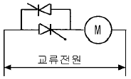
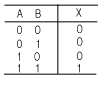

승강기기능사 (2003-10-05 기출문제)
1과목: 승강기개론
1. 승강기의 속도에 영향을 미치지 않는 것은?
- 모터의 속도
- 주시브(main sheave)의 지름
- 치차의 감속비
- 디프렉터시브(deflector sheave)의 지름
(정답률: 53%)

2. 승장실과 카실(car sill)의 간격은 몇 mm 이하로 하여야 하는가?
- 10
- 35
- 50
- 70
(정답률: 65%)
3. 최종 리미트스위치의 요건 중 틀린 것은?
- 기계적으로 조작되어야 한다.
- 최종 리미트스위치는 승강로내에 설치하고 카에 부착된 캠(CAM)에 의하여 동작된다.
- 접촉을 열기 위하여 스프링이나 중력 또는 그 복합에 의존하는 장치를 사용할 수 있다.
- 최종 리미트스위치가 작동하면 정상적인 운전장치에 의하여 양방향 운행이 불가능해야 한다.
(정답률: 35%)
4. 직류 가변전압 제어방식의 특징이 아닌 것은?
- 광범위한 속도를 원활하게 조정할 수 있다.
- 전동기의 계자회로를 제어하기 때문에 접촉자의 마모가 크다.
- 정밀 제어가 필요하며, 제어장치의 비용이 비싸다.
- 수송능력이 교류 엘리베이터에 비하여 크다.
(정답률: 32%)
5. 비상정지장치에 의하여 운행 중이던 카가 비상정지 하였다. 정지한 후의 카의 수평 허용오차는 얼마이내 이어야 하는가?
- 1/30
- 1/50
- 1/70
- 1/100
(정답률: 64%)
6. 유압식 엘리베이터의 플런져에 관한 설명으로 옳지 않은 것은?
- 플런져와 플런져를 위한 연결 카프링의 파단강도는 직결식은 5 이상, 간접식은 10 이상의 안전율을 가져야 한다.
- 플런져의 길이는 플런져 외경의 100배를 초과 할 수 없다.
- 플런져의 재질은 주철을 사용할 수 없다.
- 편심하중을 받을 경우 카 플랫홈 하중의 수직방향 휨은 20mm 이내이어야 한다.
(정답률: 39%)
7. 승강로에 설치되지 않는 것은?
- 감속 하강스위치(slow down switch)
- 가이드 레일(guide rail)
- 조속기 탠션시브(governor tension sheave)
- 탑승장 카위치표시장치 (hall position indicator)
(정답률: 52%)
8. 에스컬레이터의 계단은 계단체인에 의해 연결되어 순환 되는데 이것을 안전하게 순환시키는 것은 계단 자체의 구조와 그것에 설치되어 있는 것으로서 롤러를 안내하는 것은?
- 레일
- 스프링
- 트러스
- 라이저
(정답률: 64%)
9. 엘리베이터 케이지측의 로프가 매달리고 있는 중량과 균형추측 로프가 매달리고 있는 중량비를 트랙션비라 하는데 이 값을 낮게 선택하면 어떤 효과가 있는가?
- 엘리베이터의 속도가 빨라진다.
- 엘리베이터의 진동이 감소한다.
- 엘리베이터의 외관이 아름다워진다.
- 엘리베이터의 로프 수명이 길어진다.
(정답률: 46%)
10. 승용 엘리베이터의 범죄방지를 위해 채택된 방식은?
- 워드레오나드방식
- 종단층 강제속도장치방식
- 록다운 비상정지방식
- 강제 각층 정지운전방식
(정답률: 77%)
11. 로프식 승강기의 균형추 무게를 계산하는 식은? (단, 오버밸런스는 50%로 한다.)
- 카하중 + 카하중의 50%
- 카하중 + 적재하중의 50%
- 적재하중의 150%
- 적재하중의 50%
(정답률: 78%)
12. 일반적으로 사용되고 있는 승강기의 레일 중 13K,18K, 24K레일 폭의 규격에 대한 사항으로 옳은 것은?(오류 신고가 접수된 문제입니다. 반드시 정답과 해설을 확인하시기 바랍니다.)
- 3종류 모두 같다.
- 3종류 모두 다르다.
- 13K와 18K는 같고 24K는 다르다.
- 18K와 24K는 같고 13K는 다르다.
(정답률: 59%)
13. 공동주택용 엘리베이터에서 카 주행 중, 문에 손을 대어 억지로 여는데 필요한 힘은 최소 몇 kgf 이상이 되도록 하는가?(오류 신고가 접수된 문제입니다. 반드시 정답과 해설을 확인하시기 바랍니다.)
- 5
- 10
- 15
- 20
(정답률: 46%)
14. 기계식 주차설비를 할 때 승강기식인 경우 도르레 또는 드럼의 지름은 로프 지름의 몇 배이상으로 하는가?
- 10배
- 15배
- 20배
- 30배
(정답률: 55%)
15. 간접식 유압엘리베이터에 관한 설명 중 틀린 것은?
- 실린더의 설치면적 때문에 승강로가 직접식보다 더 커진다.
- 실린더의 점검이 용이하다.
- 부하에 의한 카 바닥의 빠짐이 비교적 큰 것은 로프의 늘어짐도 원인이 된다.
- 비상정지장치가 필요하지 않다.
(정답률: 74%)
2과목: 안전관리
16. 그림은 승강기 제어회로의 일부이다. 전동기가 최대 출력을 내기 위한 다이리스터의 점호각은 몇 도인가?

- 0
- 30
- 90
- 180
(정답률: 26%)
17. 도어판넬과 삼방틀간의 틈새는 어느 정도가 가장 바람직한가?
- 3∼4mm
- 5∼7mm
- 8∼9mm
- 10∼12mm
(정답률: 48%)
18. 시간당 9000명의 수송능력을 가진 에스컬레이터의 형식은?
- 800형
- 900형
- 1000형
- 1200형
(정답률: 76%)
19. 누전차단기를 반드시 설치하지 않아도 되는 장소는?
- 물이 고인 장소
- 농도가 짙은 액체에 의한 습윤 장소
- 충전부의 장소
- 도전성이 높은 장소
(정답률: 53%)
20. 중상자가 발생할 우려가 있는 작업자의 구급 용구로 볼 수 없는 것은?
- 지혈대
- 부목
- 휠체어
- 들것
(정답률: 67%)
21. 사다리를 사용하는 작업에서 안전수칙에 어긋나는 행위는?
- 위험 및 사용금지의 표찰이 붙어서 결함이 있는 사다리를 사용 할 때는 주의하면서 사용한다.
- 사다리 밑끝이 불안전하거나 3m이상의 높은 곳이면 다른 사람으로 하여금 붙들게 하고 작업한다.
- 사다리를 문앞에 설치할 때는 문을 완전히 열어 놓거나 잠궈야 한다.
- 사다리 설치시에는 사다리의 밑바닥이 사다리 길이와 관련지어 어느 정도 벽에서 떨어지게 한다.
(정답률: 67%)
22. 감전사고를 방지하기 위한 대책으로 볼 수 없는 것은?
- 작업자에 대한 안전교육
- 전기기기에 위험 표식
- 대지전압 200V이하의 전기기기만 사용
- 전기기기 및 장비의 정비
(정답률: 85%)
23. 재해 발생시 긴급 처리해야 할 사항이 아닌 것은?
- 피해 기계의 정지
- 피해자의 응급조치
- 관계기관에 신고
- 2차 재해방지
(정답률: 60%)
24. 안전점검 및 진단순서가 맞는 것은?
- 실태 파악, 결함 발견, 대책 결정, 대책 실시
- 실태 파악, 대책 결정, 결함 발견, 대책 실시
- 결함 발견, 실태 파악, 대책 실시, 대책 결정
- 결함 발견, 실태 파악, 대책 결정, 대책 실시
(정답률: 53%)
25. 기계안전의 기본원칙 중 가장 효율적인 것은?
- 안전장치
- 방호조치
- 자동화
- 개인 보호구
(정답률: 38%)
26. 이상통제의 조건이 아닌 것은?
- 설비
- 휴식
- 방법
- 사람
(정답률: 61%)
27. 승강기 카와 건물벽사이에 끼어 재해를 당했다면 재해 발생의 형태는?
- 협착
- 충돌
- 전도
- 화상
(정답률: 83%)
28. 재해 발생의 원인 중 가장 높은 빈도를 차지하는 것은?
- 열량의 과잉 억제
- 설비의 배치 착오
- 과부하
- 작업자의 작업행동 부주의
(정답률: 73%)
29. 엘리베이터 사용자의 안전을 위하여 400Ｖ이하의 전압이 인가된 기기의 외함에는 제 몇 종 접지를 하는가?
- 제1종
- 제2종
- 제3종
- 특별제3종
(정답률: 70%)
30. 주유를 하지 않아야 하는 곳은?
- 베어링
- 웜기어박스 내부
- 조속기 축
- 브레이크 라이닝
(정답률: 64%)
3과목: 승강기보수
31. 승객용 승강기의 제동기의 조정은 카에 몇 % 의 부하를 걸었을 때 위험하지 않게 감속정지하도록 조정하는가?
- 110
- 115
- 125
- 150
(정답률: 54%)
32. 균형로프(compensating rope)의 역할은?
- 주로프를 보강
- 카의 낙하를 방지
- 균형추의 이탈을 방지
- 주로프와 이동케이블이 이동함에 따라 변화되는 하중을 보상
(정답률: 66%)
33. 조속기 스위치를 설명한 것으로 옳은 것은?
- 일단 작동하면 자동으로 복귀되지 않는다.
- 작동 후 속도가 정상으로 복귀되면 스위치도 복귀된다.
- 일단 작동하면 교체하여야 한다.
- 자동복귀되어도 작동하지 않는다.
(정답률: 44%)
34. 로프의 마모상태가 소선의 파단이 균등하게 분포되어 있는 상태에서 1구성꼬임(1 strand)의 1꼬임피치에서 파단수가 얼마이면 교체할 시기가 되었다고 판단하는가?
- 1
- 2
- 3
- 5
(정답률: 22%)
35. 유압 승강기의 릴리프 밸브(Relief Valve)를 조정할 때 상용압력의 몇 % 로 조정하여야 하는가?
- 95
- 1⑤
- 115
- 125
(정답률: 49%)
36. 에스컬레이터의 디딤판과 스커트 가드와의 간격은 안전을 위하여 몇 mm 로 하는가?
- 2∼5
- 3∼7
- 5∼8
- 6∼9
(정답률: 36%)
37. 정격속도가 45m/min이하인 승강기에서 승강기가 최상층에 정지하였을 때 카 상부에서 승강로 상부까지의 거리 즉, 꼭대기 틈새의 거리는 몇 m 이상이어야 하는가?
- 1.0
- 1.2
- 1.4
- 1.5
(정답률: 51%)
38. 에스컬레이터의 제작기준으로 맞지 않는 것은?
- 경사도는 일반적인 경우 30도이하로 한다.
- 핸드레일의 속도는 디딤판과 동일 속도로 한다.
- 디딤판의 속도는 65m/min 이하로 한다.
- 핸드레일은 디딤판과 동일 방향으로 한다.
(정답률: 71%)
39. 승강기의 가변전압 가변주파수 제어방식에서 인버터부는 일반적으로 어느 제어 시스템인가?
- PWM
- PAM
- PSM
- ＩGBT
(정답률: 43%)
40. 가이드 레일의 보수점검 사항 중 틀린 것은?
- 녹이나 이물질이 있을 경우 제거한다.
- 레일 브래킷의 조임상태를 점검한다.
- 레일 클립의 변형 유무를 체크한다.
- 레일면이 손상되었을 경우에는 방청페인트로 표면에 곱게 도장한다.
(정답률: 73%)
41. 기계실에서 행하는 검사항목이 아닌 것은?
- 수전반 주개폐기는 원칙적으로 출입문 가까이 있어야 한다.
- 제어반 및 기타의 제어장치의 설치는 기계실 바닥의 고정상태와는 관계가 없다.
- 비상용 카에는 예비전원을 설치하지 않아도 된다.
- 제어반내의 각 스위치의 접점 및 작동은 검사할 필요가 없다.
(정답률: 16%)
42. 에스컬레이터에서 계단식 체인은 일반적으로 어떻게 구성되어 있는가?
- 좌·우 각 1개씩 있다.
- 좌·우 각 2개씩 있다.
- 좌측에 1개, 우측에 2개 있다.
- 좌측에 2개, 우측에 1개 있다.
(정답률: 63%)
43. 압력배관에 대한 설명으로 옳지 않은 것은?
- 연결재는 재사용이 불가능한 구조이어야 한다.
- 파워 유니트에서 실린더까지는 압력배관으로 연결 하도록 한다.
- 지진, 진동 및 충격을 완화하는 장치가 설치되고 벽 등 관통부분은 슬리브 등이 설치되어야 한다.
- 압력 고무호스는 여유가 없어야 하며 일직선으로 연결되어 있어야 한다.
(정답률: 57%)
44. 블리드오프회로를 사용한 제어방식의 특징 중 잘못 설명한 것은?
- 유량제어밸브를 파일롯회로에 의해 제어하기 때문에 작동유의 온도나 압력 변화 등의 영향을 받기 쉽다.
- 카의 기동시 유량 조정이 어렵다.
- 기동, 정지시 쇼크가 적다.
- 상승운전시 효율이 높다.
(정답률: 36%)
45. 피트에서 하는 검사가 아닌 것은?
- 완충기의 설치상태
- 아래부분 리미트 스위치류 설치상태
- 조속기 로프의 인장장치 설치상태
- 비상구출구 설치상태
(정답률: 57%)
4과목: 기계,전기기초이론
46. 엘리베이터의 운행속도를 기계적이고 전기적인 방법으로 동시에 검출하고 작동하는 안전장치는?
- 마그네틱 테이프
- 비상정지장치
- 조속기
- 브레이크
(정답률: 68%)
47. 직류전동기에 보극을 설치하는 이유로 옳은 것은?
- 브러시에서의 스파크 발생을 방지하기 위해서
- 전기자의 회전수를 빠르게 하기 위해서
- 전동기의 힘을 2배로 높혀 주기 위해서
- 전동기의 회전방향을 바꾸어 주기 위해서
(정답률: 36%)
48. 표와 같은 진리치표에 대한 논리회로는?

- OR
- NOR
- AND
- NAND
(정답률: 54%)
49. SCR의 게이트 작용은?
- ON-OFF 작용
- 통과전류의 제어작용
- 브레이크 다운 작용
- 브레이크 오버 작용
(정답률: 42%)
50. 권수 N의 코일에 Ｉ[A]의 전류가 흘러 자속 φ[Wb]가 생겼다면 자기인덕턴스 L은 몇 H 인가?
- L= (φＩ)/N
- L=ＩNφ
- L= (Nφ)/Ｉ
- L=(ＩN)/φ
(정답률: 44%)
51. 1MΩ은 몇 Ω 인가?
- 103
- 106
- 108
- 1012
(정답률: 62%)
52. 승강기의 안전운행상 상승 및 하강 마그네틱(전자접촉기) 전단에는 어떤 방법으로 회로를 구성하는 것이 좋은가?
- 도어닫힘 확인 릴레이 a접점을 넣는다.
- 도어닫힘 확인 릴레이 b접점을 넣는다.
- 상승시에는 하강 마그네틱 보조 a접점을 넣는다.
- 하강시에는 상승 마그네틱 보조 b접점을 넣는다.
(정답률: 32%)
53. 인장(압축)응력 σ에 관한 공식으로 옳은 것은? (단, P: 집중하중, A: 단면적, W: 등분포하중, λ : 변형량, ℓ : 평면간 거리이다. )
- σ=P/A
- σ=λ/ℓ
- σ=W/A
- σ=W/ℓ
(정답률: 45%)
54. 높이 50mm의 둥근 봉이 압축하중을 받아 0.004의 변형률이 생겼다고 하면, 이 봉의 높이는 몇 mm 인가?
- 49.80
- 49.90
- 49.98
- 48.99
(정답률: 48%)
55. 캠의 운동특성과 거리가 먼 것은?
- 부등속운동
- 주기적인 운동
- 제동운동
- 상하좌우운동, 직선운동, 왕복운동
(정답률: 36%)
56. 2V의 기전력으로 20Ｊ의 일을 할 때 이동한 전기량은 몇 C 인가?
- 0.1
- 10
- 40
- 24000
(정답률: 43%)
57. 피측정 전압원에 계기나 측정기를 접속하면 미소한 전류가 흘러, 전압원의 내부 저항에 의한 전압강하가 원인이 되어서 실제의 전압보다 낮은 전압이 측정되는 효과는?
- 계측기 접속에 의한 부하효과이다.
- 열효과에 의한 제에백효과이다.
- 측정기의 세기에 의한 표피효과이다.
- 자기장에 의한 압전효과이다.
(정답률: 37%)
58. 응력의 종류와 거리가 먼 것은?
- 수직응력
- 평면응력
- 전단응력
- 경사응력
(정답률: 28%)
59. 옴의 법칙으로 옳은 것은?
- V= I2 R
- Ｉ= V2/R
- R= V/I
- R=I/V
(정답률: 60%)
60. 브러시는 자극의 중성축에 설치하는데 중성축에서 브러시를 이동시켰을 때 발생하는 현상은?
- 직류전압이 갑자기 증가된다.
- 불꽃은 적어지고 소음이 심하다.
- 직류전압이 안 나온다.
- 직류전압이 감소하고 불꽃이 생길 수 있다.
(정답률: 46%)